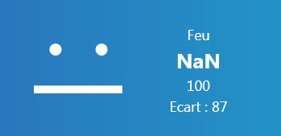
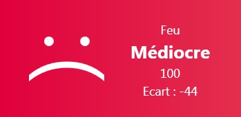
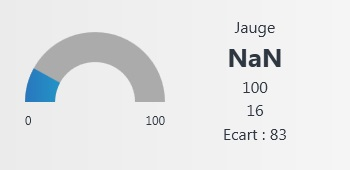
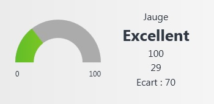
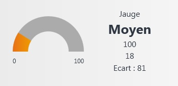
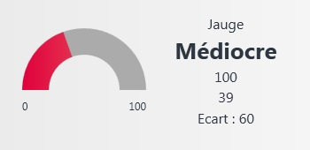

Ces deux types de widgets partagent les mêmes informations.
Les balises HMP sont :
|
Balise |
Commentaire |
Type |
|
MinValue |
Valeur minimale |
Numérique |
|
MaxValue |
Valeur maximale |
Numérique |
|
CurrentValue |
Valeur courante |
Numérique |
|
State |
Etat (couleur) |
Numérique |
|
Spread (Facultatif) |
Ecart par rapport à l'objectif |
Alpha |
|
Current (Facultatif) |
Valeur courante formatée |
Alpha |
|
Text (Facultatif) |
Titre du widget |
Alpha |
|
Error (Facultatif) |
Texte d'erreur |
Alpha |
La balise <Text> permet de changer le libellé affiché du widget. Par défaut, c'est le titre du widget qui est affiché.
La balise <Error> permet d'afficher une erreur par dessus le widget.
Si la balise <Current> est présente, c'est le contenu de cette balise qui est affichée. Cela permet d'afficher une valeur mise en forme.
Remarque : Ces balises sont les mêmes pour le widget Feu et Jauge. Un même module de calcul peut donc être utilisé pour les deux types.
Couleur de l'indicateur
4 constantes sont définis dans l'include zdiva.dhsp :
TRAFFIC_STATE_NEUTRAL (bleu)
TRAFFIC_STATE_GREEN (vert)
TRAFFIC_STATE_ORANGE (orange)
TRAFFIC_STATE_RED (rouge)
Exemple :
1 compteur X = 0
Function String InitFeu(&Widget)
record a5dd.dhsd MWidget Widget
beginf
FReturn "<MinValue>0<MaxValue>100"
endf
Function String UpdateFeu (&Widget)
record a5dd.dhsd MWidget Widget
1 valeur X
1 resultat S
beginf
valeur = Modulo(compteur++, 4)
resultat = "<CurrentValue>" & ToString(valeur) && "<State>" & ToString (valeur) && "<Spread>Ecart : " & toString(100 - compteur) & "<Current>"
Switch2 (valeur)
Case TRAFFIC_STATE_NEUTRAL
resultat &= "NaN"
Case TRAFFIC_STATE_GREEN
resultat &= "Excellent"
Case TRAFFIC_STATE_ORANGE
resultat &= "Moyen"
Case TRAFFIC_STATE_RED
resultat &= "Médiocre"
EndSwitch
FReturn resultat
endf
Si ce widget Feu est configuré pour être rafraîchi toutes les secondes, on obtient à l'affichage :

puispuis
puis

Si on choisit le type Jauge, on obtient :

puis
puis

puis
